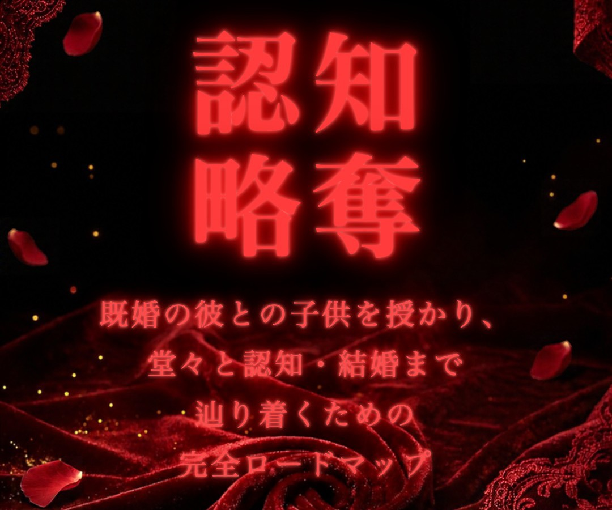

これを読んでいるあなたは、
今、誰にも言えない恋を
抱えながら、
こんな不安を感じていませんか？
「彼の子供が欲しい」
「でも、相手は既婚者。
もし口に出したら
嫌われるかもしれない」
「このままじゃ、
私は一生『都合の良い女』で
終わっちゃうのかな……」
世間の恋愛カウンセラーは
こう言います。
「既婚者との未来なんて
諦めなさい」
「そんな重いこと
考えちゃダメだよ」って。
バカバカしい。
そんな綺麗ごとで
自分の本心が消えるなら、
そもそもこんな文章を
読んでいないはずです。
少しだけ、僕の話をさせてください。
僕は、既婚男性の子供として
生まれました。
僕の母は、別の既婚男性との間に
僕を身ごもりました。
当時の周りの反応は、
今のあなたに対する
世間の目と同じです。
「絶対に無理」
「捨てられて終わり」
「そんなことしたら人生が壊れる」
実際、そこから先は泥沼でした。
認知、修羅場、妻との対決……。
でも最終的にどうなったか。
その男は、当時の一番の理解者だった
母を選び、
家庭を捨てて再婚しました。
その結果として、
今、僕がここにいます。
僕は、「絶対に無理だ」と言われた
泥沼から、
天地がひっくり返って生まれた
「動く証拠」です。
勘違いしないでほしいのは、
母が特別な美人だったわけでも、
運が良かっただけでも
ありません。
母が
「男という生き物の心理と構造」を
ちゃんと知っていたからです。
「普通の恋愛のルール」で
戦う女から順番に、
既婚男の都合の良い
オモチャとして捨てられます。
既婚の彼との間に
未来を描くなら、
普通のルールで
動いてはいけない。
このプレゼントでは、
難しい理論は一切抜きにして、
「今日からそのまま
コピペして送るだけで、
彼の中に
『この女との子供・未来』を
無意識に刷り込む
禁断のフレーズ集」を
お渡しします。
既婚男性に
「子供が欲しい」「認知して」と
直球で言うと、
彼らは「重荷・リスク」を感じて
100%逃げ出します。
そうではなく、
彼の「男としてのプライド」と
「遺伝子を残したい本能」を
くすぐり、彼の方から
「この女になら俺の血を残したい」と
錯覚させるフレーズを
日常に混ぜ込んでください。
まずは、以下のテンプレートを
そのまま真似して
使ってみてください。
男は、自分の考え方や生き方を
心から尊敬してくれる女性に、
自分の遺伝子を残したくなります。
「好き」ではなく
「あなたの血が欲しい」と
無意識に意識させる言葉です。
彼が仕事や判断で何かを成し遂げた時
「〇〇くんのそういう決断力、
本当に尊敬する。
将来もし私に子供ができたら、
〇〇くんみたいな
考え方をする子に
育ってほしいなって
本気で思うよ（笑）」
ふとした瞬間に笑顔で
「〇〇くんって本当に
芯が通ってるよね。
なんか、〇〇くんのDNAって
絶対強いと思う（笑）」
彼の優しさや器の大きさに触れた時
「〇〇くんといると、
なんか
『この人の血を引く子だったら
絶対幸せになれるだろうな』って
勝手に想像しちゃう。
あ、重くないからね！
ただの独り言（笑）」
家庭で「稼いでくる夫・父親」という
役割を押し付けられている男ほど、
「一人のオトコ」として
扱われると理性が壊れます。
彼が仕事で疲れている夜に（返信不要の気遣い）
「今日もお疲れ様！
家でも外でもずっと頑張ってて
本当にすごいよ。
私の前では何もしなくていいし、
ただの〇〇くんでいてね。
おやすみ！」
別れ際や電話の最後に
「〇〇くんが背負ってるもの
全部は代われないけど、
私だけはいつでも
〇〇くんの
絶対的な味方だからね」
彼が愚痴をこぼした時
「それ、〇〇くんが
それだけ責任感持って
戦ってる証拠だよ。
私にはそのすごさ、
ちゃんと伝わってるから
大丈夫」
「いつでも俺のもの」と
思われている女に、
男はリスクを冒しません。
自分の人生をしっかり歩みつつ、
彼への深い愛を見せることで、
男の独占欲を狂わせます。
彼からなかなか会う予定が決まらない時
「今週は私も
自分のやりたかったこと
進めるね！
〇〇くんも無理しないで、
時間できた時に
声かけて〜！」
将来の話題がチラッと出た時
「私は〇〇くんと過ごせる
今の時間が本当に幸せだから、
それだけで十分。
でも、もし神様が
『なんでも一つ
願いを叶える』って
言ったら、
迷わず〇〇くんとの未来を
選ぶかな（笑）」
久々に会えた日の夜に
「今日も本当にありがとう。
〇〇くんといると、
どんな困難があっても
一緒に乗り越えていける
気がするんだよね。
不思議と（笑）」
「ありがとう」ではなく
「頼りになる・助かった」という
言葉を使うことで、
男の中に「この女を背負う覚悟」の
種を蒔きます。
ちょっとした相談に乗ってもらった後
「〇〇くんに話して
本当によかった！
やっぱり〇〇くんの視点は
すごいね。
めちゃくちゃ助かったし、
心強いよ」
彼が何かを決めてくれた時
「〇〇くんがそう言うなら
間違いないね。
私、〇〇くんの判断には
絶対の信頼置いてるから」
上記のテンプレートを使う時、
さらに効果を倍増させるための
簡単なルールが3つあります。
これだけ守れば、
彼はあなたに対して
一切の警戒心を
抱かなくなります。
1. 重いトーンは禁止！語尾に「（笑）」や軽やかさを混ぜる
真剣な顔で
「あなたの子供が欲しい」と言うと
男は逃げますが、
冗談めかして「〇〇くんのDNA
欲しいわ〜（笑）」と
言われると、男の脳内には
「え、俺の子供…？」という
強烈なイメージ（種）だけが
確実に残ります。
2. 「どうするの？」「いつ？」という質問は一切しない
答えを迫らないことで、
彼は「この女性は俺に
責任を押し付けてこない」と
安心し、逆に彼の方から
「この女性に
何かしてやりたい」
「未来を作ってやりたい」と
考え始めます。
3. 彼を「一人の男」として立て続ける
家庭では「パパ」「旦那」と呼ばれ、
男としてのプライドを
失っている彼を、
あなただけは
「〇〇くん（名前）」と呼び、
一人の魅力的な男性として
扱い続けてください。
いかがでしたか？
ここに書いたフレーズを
そのままコピペして送るだけでも、
彼の態度は驚くほど変わり、
あなたへの執着や
「この女性との未来も
いいかも……」という
傾きは確実に生まれます。
……しかし、ここであなたに、
どうしても伝えておかなければ
ならない残酷な現実があります。
実は、この強力なテンプレートを
完璧に真似して実践したとしても、
9割以上の女性は
途中で挫折し、
最終的に「認知略奪」まで
辿り着くことができるのは、
ほんの一握りの女性だけなのです。
「えっ、なんで？
こんなに彼の態度が変わるのに？」
と思いましたよね。
理由は明確です。
それは、言葉やLINEで
彼の気持ちを
傾かせることができても、
いざ「妊娠・認知・離婚」という
現実の壁が目の前に
立ちはだかった瞬間、
既婚男性が持つ
「家庭や社会的地位を
守りたい」という
強烈な保身の本能（ブロック）が
発動し、
すべてをひっくり返されて
しまうからです。
「すごく愛されている実感が
あったのに、いざという時に
『やっぱり妻とは別れられない』
『子供のことは今は無理だ』と
逃げられてしまった……」
そんな風に、
あと一歩のところまで行きながら、
男の保身の壁を
突破できずに
涙を飲んで挫折していく女性が
山ほどいるのです。
では、ほんの一握りの女性だけが、
どうやってその
「男の保身の壁」をぶち壊し、
認知略奪を成し遂げているのか？
実は、今回お伝えしたような
「言葉で彼の気持ちを
傾かせる方法」とは
全く次元の違う、
男の保身やプライドを
裏から完全に操作し、
彼自ら「お前と子供を
背負うしか道はない」と
覚悟を決めさせる
『禁断の構造（裏技）』が
存在します。
僕の母が、絶望的な泥沼から
天地をひっくり返し、
既婚男性に家庭を捨てさせて
僕を生んだのも、
まさにこの「裏の構造」を
使ったからです。
コピペのフレーズで
彼の気持ちを傾かせるのは、
あくまで最初の入り口に過ぎません。
もしあなたが
「途中で挫折する9割の女」に
なりたくないなら。
ほんの一握りの
「すべてを奪い取る側の女」に
なりたいと本気で願うなら。
この公式LINEの中で、
特別な
「認知に役立つ裏の暴露」を
順次公開していきます。
一般のSNSでは
絶対に書けない
過激でリアルな内容になるため、
ブロックしたり
通知を切ったりせず、
必ずこのLINEを
追加したまま
待っていてください。
あなたが
「都合の良い女」で終わるか、
それとも彼の愛も遺伝子も
未来もすべて自分の手で掴み取るか。
次の配信で、
その真実の扉を開けます。
見逃さないようにしてくださいね。
ここまで読んでくれて、
ありがとうございます。
ここからのブログでは、
あなたが今どこで悩んでいて、
本当はどんな未来を
望んでいるのかも踏まえて、
話をしていきたいと思っています。
その前に、今日のワークで
今のあなたのことを
少し聞かせてください。
一問につき一言でも大丈夫です。
次のブログの予告
次のブログでは、
あなたが望む未来について、
「私の場合は無理かも」
と感じたとき、
最初に何を見てほしいかを
お話しします。
ケイ